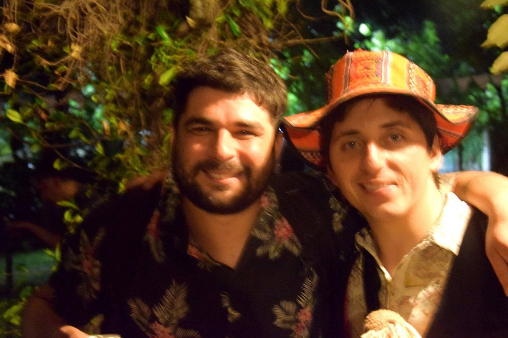
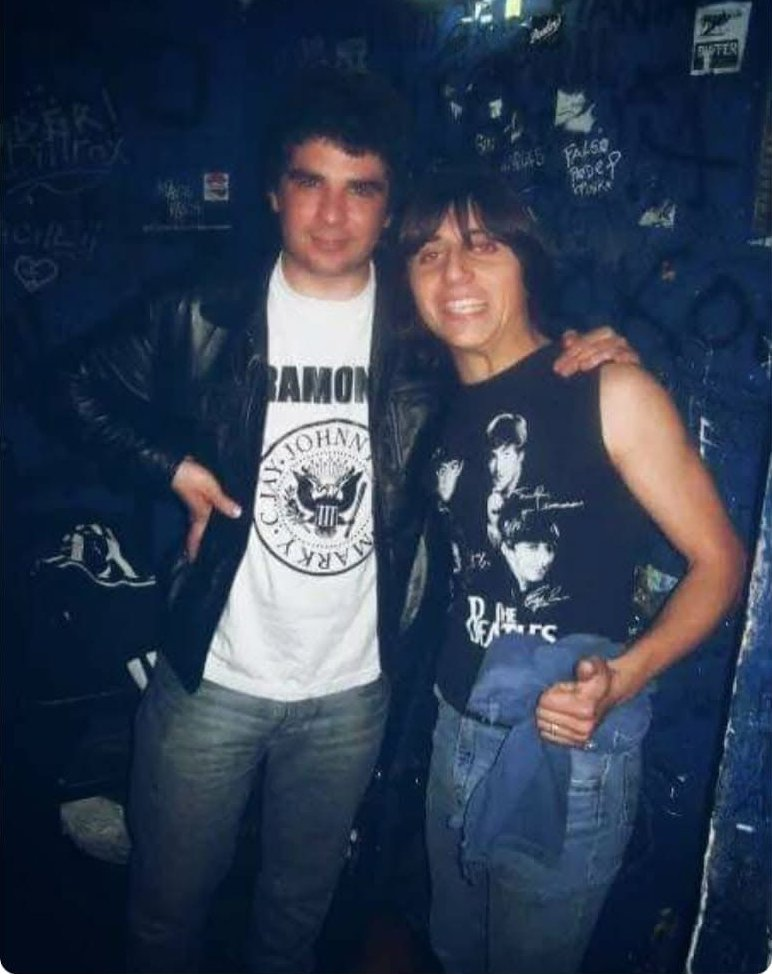
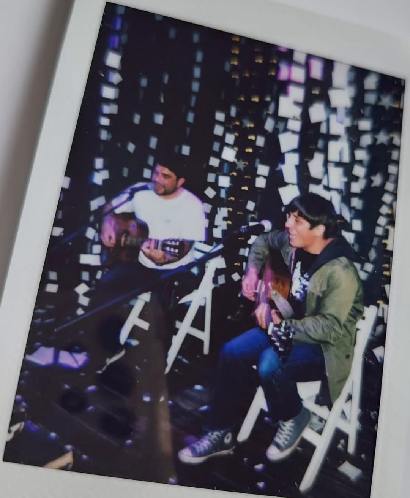
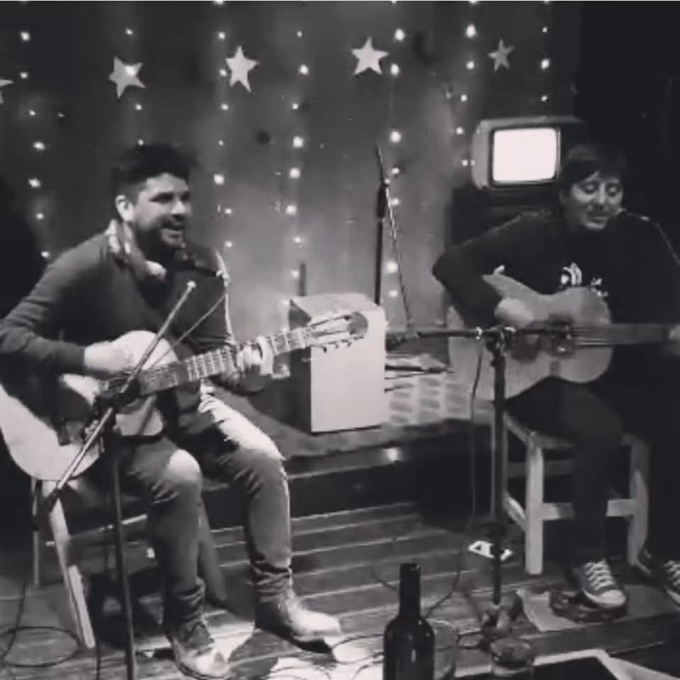

Últimas notas
Agenda
Recitales y festivales que recomendamos¿Tocás? Mandanos tu fecha por Instagram.
Nosotros

Indie Popular nació el 02/04/22 como un evento para que artistas independientes pudieran mostrar su arte. Lo hicimos donde se podía, siempre autogestivo y sin fines de lucro.
Detrás estamos Aky Heredia y Matías Silva. Nos conocimos de adolescentes por el punk rock y el amor por los Ramones, cuando cada uno tenía su banda. Después vinieron los caminos solistas: Aky sigue tocando sus canciones y Matías se dedica a la fotografía, que también es un arte.
Hoy sumamos noticias, entrevistas y coberturas de la música que nos gusta, y seguimos haciendo eventos cuando se puede. Somos de San Miguel, provincia de Buenos Aires.



Aky Heredia
Matías Silva
@matiassilva.ph · matiassilvaph.com (fotografía)